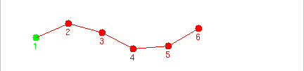

Con el programa cube-virtual se pueden generar secuencias de movimiento
automáticamente,
utilizando un modelo de propagación de ondas sinusoidales. Aquí puedes ver un pantallazo:

La
generación de secuencias se explica a continuación. Realmente los cálculos se hacen usando
el modelo de gusano, pero aquí se va a mostrar de una
manera gráfica:
Este algoritmo se ha llamado Algoritmo de ajuste. Para generar la secuencia de movimiento se parte
del gusano en reposo, una función sinusoidal y se aplica el algoritmo de ajuste:

Ahora se desplaza la onda y vuelve a aplicar el algoritmo de ajuste:

El proceso se repite hasta que la onda vuelve a tener la fase inicial. El resultado obtenido, visualmente, es como
el mostrado en esta animación:

El programa cube-virtual muestra la secuencia de movimiento visualmente, permitiendo que el usuario
cambia los parámetros de la función de onda y vea qué tipo de secuencias de movimiento se producen.
Las secuencias de movimiento creadas se graban en un fichero y luego se envían a CUBE-2.0 usando el
programa cube-físico.